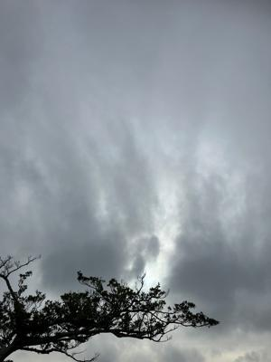

うるがいの話 ある日
最新: 腰痛もち【うるがいの話 ある日】とは 一日だけのプログです
『うるがいの話』の最新一日だけのプログで、通信料が少なく経済的だ。カニの画像をクリックすると全ての日付が載る『うるがいの話』サイトを表示します
|
|
【うるがいの話】 うるがい(ｳﾙｶﾞｲ urugai)とは、『もずくがに』の名前でとても大きくなります。 |
|---|---|
|
|
【カミマヤーの話】 猫のことを方言でマヤーといいます。カミマヤー（kamimayaa）とは、神の猫のことです。 |
|
【たながぁの音楽】 たながぁ（ﾀﾅｶﾞｰ tanagaa）とは手長えびのことで、何種類かあり大きいのは車 エビぐらいになります。 |

|
【ぶながぁの話】 ぶながぁ(ﾌﾞﾅｶﾞｰ bunagaa)とは、赤い髪の毛、赤い身体、そして身長は１ｍ２０ｃｍ ぐらい、川の蟹を食べているの目撃された。場所は沖縄県国頭郡大宜味村のと ある村僕の隣近所に住んでいる爺さんから、聞いた話です。 |
|
|
【ギーマの話】 ギーマ(giima)とは、山原の里山に咲くスズランに似た、 花を付けます。実は食べられます、 気が付くと口の周りが紫になっています。 |
2023年07月06日 (木）腰痛もち
15:24

社会人になってから、腰痛に悩まされている。定期的にギックリ腰になり、整
体の病院へ通っていた。あるとき、先生がギックリ腰はクセだからね、治って
もまた成るから。ホー、ソウダベ。それから、１０年はたっただろうか、腰が
痛くなっても病院へいかず、治るまで痛みを我慢した。最近は、朝の気功もど
きなどのお陰か、かなり頻度が少なくなっている。ところが先週、庭仕事を数
日続けていた、おお、そろそろ腰にくるかもと思っていたら、来た！。昨日コ
ドモを、空港に迎えるために車にのったらかなりの痛み、ヤバイ・・、そして
昼を過ぎると、靴下を履くにも痛みでキツイ。フムフム、痛い時こそジョギン
グだと、痛みがあるが走る。夕食後、そうだ、痛み止めを飲めば・・・・・。
尿路結石対応のため、病院から痛み止めを頂戴しスットクしている。
ロキソプロフェンＮａ錠６０ｍｇ「武田テバ」
急性炎症、疼痛及び発熱の程度を考慮し、投与すること。
椅子に座って、テレビをみていると１時間後、腰の痛みが消えている。ん！薬
のせいか。朝になっても、少し痛みがあるものの全然治っている。これまでの
経験だと治るまで一週間は、痛みと付き合っていたが。ところで、この痛み止
めの薬は、尿路結石ではほとんど効かない、座薬でないと効かない。座薬でも
てき面ではなく、痛みは半分程度に軽減されるだけである。
禅的生活 玄侑 宗久 ちくま新書 より引用
全国のお医者さんたちにアンケートをとり、どの病気がいちばん痛いと想いま
すかと訊いたらしいのだが、むろんこれだってお医者さん自身がすべての病気
を経験しているわけじゃないから「見てて痛そうだった病気」ということなの
だが、痛がりとそうでない人もいるからこれもどうなのか判らない。一応ここ
まで言ったら知りたい方もいるだろうから申しあげておくと、一位は末期の喉
頭癌、二位はクモ膜下出血の発作、三位は尿路結石だそうである。アテになら
ないとはいっても、できれば避けたい病気である。
１５時１８分 ビットコインの総資産 ￥１２、７７４（↓１６６）